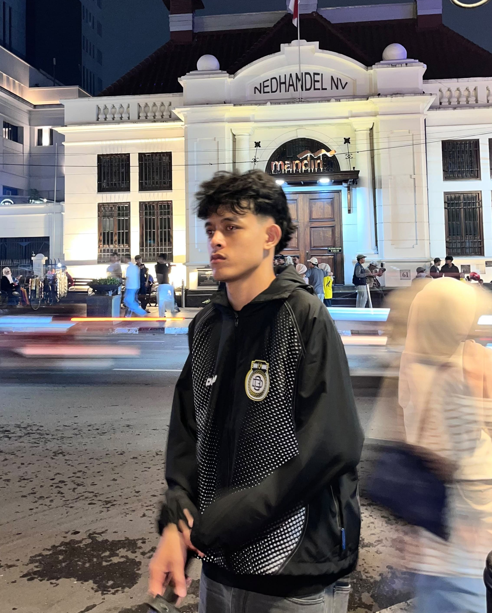
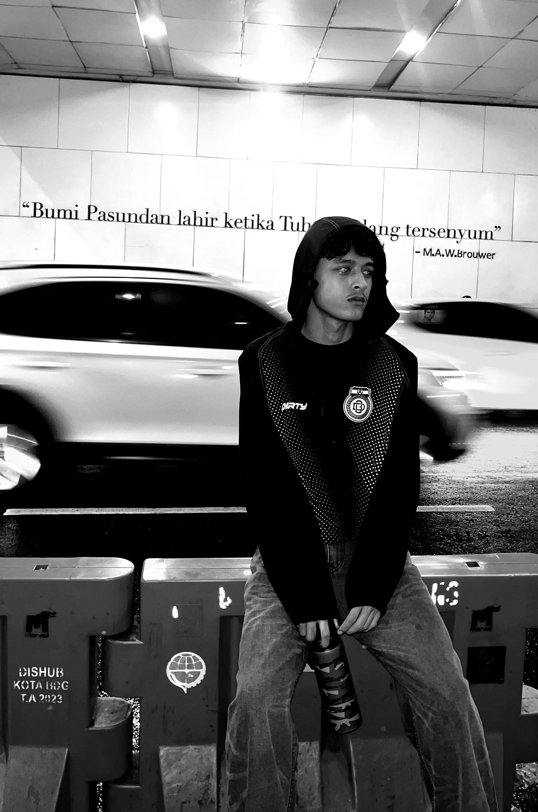

Informatics student · Yogyakarta, ID
Hi, I'm Faiq. I build web, mobile & AI things.
I’m a seventh-semester Informatics student at Universitas Amikom Yogyakarta. I turn ideas into working applications, from Laravel-powered backends and Flutter mobile apps to deep learning models.
Scroll ↓(Portrait)
Move closer,
burn through.
A 1-bit photo of me. Your cursor burns it back to full colour, then it knits itself shut again, cell by cell.
hover the photo ↘

Selected works
(07) · hover to read more
-
01 Auto2000 Content System Web · Laravel · Internship 2026 An internal web app that turns scattered spreadsheets and chat files into one content approval workflow.
My internship project: an internal web application for Auto2000 Soekarno-Hatta, a Toyota dealership branch, replacing content plans and documents that used to live in spreadsheets and chat groups. Teams submit content, review it, request revisions, and approve it, with a shared calendar, notifications, search, and downloadable documents. Access is role-based for content creators, the branch head, customer relations, and sales, and an information center keeps PDFs, images, Word files, and videos together with optional captions. It is built with Laravel and MySQL and checked with automated PHPUnit tests and 30 black-box test scenarios.
- Laravel
- PHP
- Blade
- MySQL
- RBAC
- Vite
- PHPUnit
-
02 Auto2000 Customer App + API Mobile · Flutter + Laravel 2026 A Flutter prototype for car buyers, powered by a Laravel REST API I built and tested separately.
A prototype customer app for Auto2000 Soekarno-Hatta, a Toyota dealership branch, built with Flutter and backed by its own Laravel REST API. The flow covers new and used cars, promos, service booking with coupons, accessories, spare parts, trade-in requests, and test drive booking. On the backend I worked on Sanctum authentication, the end-to-end booking and coupon flow, a trade-in scheme that assigns requests to sales staff, and saved promos that persist per user instead of living only in the app's memory. The app is covered by Flutter tests and a CI pipeline, and the API by access-control security tests.
- Flutter
- Dart
- Laravel
- Sanctum
- MySQL
- REST API
- CI
-
03 Auto2000 Dealer Website & Admin Web · Laravel · MySQL 2026 A dealership site with a vehicle catalog, online booking, promotions, and an admin dashboard.
A website for an Auto2000 dealership, with a vehicle catalog that includes variants, colors, and photo galleries, plus online booking, inquiries, articles, and promotions. An admin dashboard manages the content and moves booking requests through four statuses: pending, approved, completed, and cancelled. I built the pages, models, and migrations behind the catalog, booking, article, and promotion features, and spent a good part of the work debugging backend logic along with the front-end behavior of the gallery and color picker.
- Laravel
- PHP
- Blade
- JavaScript
- MySQL
- Migrations
-
04 TomatoScan Computer Vision · Thesis 2026 Tomato plant disease classification using MobileNetV2.
The subject of my undergraduate thesis: a multi-class classifier that recognizes tomato leaf diseases from digital images, built on the lightweight MobileNetV2 architecture. Training uses a three-phase progressive fine-tuning strategy on a balanced 10-class dataset of about 11,000 images, as a lighter alternative to heavier ensemble approaches in earlier research. A related Data Mining course version became an end-to-end pipeline, from training in Google Colab with MLflow experiment tracking to a Flask web app for trying the model.
- Python
- TensorFlow
- MobileNetV2
- Transfer Learning
- MLflow
- Flask
-
05 Batik Motif Classifier Deep Learning · CNN 2026 A CNN model that recognizes batik motifs from images.
Final project for my Artificial Intelligence course: a convolutional neural network that classifies traditional Indonesian batik motifs. The model is a 4-layer CNN trained for 50 epochs, with zoom and shear augmentation to help it generalize across different pattern variations. I built and ran the whole workflow in Google Colab and analyzed the results for a recorded presentation.
- CNN
- Python
- Data Augmentation
- Google Colab
-
06 Shankara CV Mugijaya Web · Team project 2026 Warehouse and driver management features, built in a team and shipped via GitLab.
A group project for a company system where I took on the warehouse and driver management features. My part was adding these modules to the team's existing codebase, which meant reading other people's code, matching its structure, and keeping changes clean enough to merge. We collaborated through GitLab, pushing and reviewing work as a team.
- PHP
- GitLab
- Team Collaboration
-
07 Rice Production Analysis Data Analysis · Sumatra 2026 Analysis of rice production data across Sumatra, presented and defended in interview.
A data analysis of rice production across Sumatra, looking at which factors actually move harvest results. I worked with a regional rice crop dataset and used correlation analysis and regression to measure relationships and identify the influencing factors. The work was presented and then defended in a one-on-one interview.
- Correlation
- Regression
- Data Analysis
(About)
I'm an Informatics student who enjoys the whole pipeline: training a model, wiring up a database, shipping the interface people actually touch, and testing it before it goes out. I learn by building real things, from coursework and team projects to internship work.
Seventh-semester Informatics student at Universitas Amikom Yogyakarta
Web & mobile apps, back-end APIs, deep learning, data analysis

Web · Mobile · AI
(Toolbox)
Mobile
- Flutter
- Dart
- REST API Integration
- Flutter Testing
- UI/UX Prototyping
Web
- Laravel
- PHP
- Blade
- Eloquent ORM
- Laravel Sanctum
- REST API
- RBAC
- Flask
- HTML
- CSS
- JavaScript
- Vite
- Responsive Design
AI & Data
- Python
- TensorFlow
- CNN
- MobileNetV2
- Deep Learning
- Transfer Learning
- Computer Vision
- Data Mining
- Data Analysis
- Google Colab
- MLflow
Database & Tools
- MySQL
- MariaDB
- SQL
- Database Design
- Migrations
- Git
- GitHub
- GitLab
- VS Code
- XAMPP
- Composer
- npm
- PHPUnit
- CI Pipeline